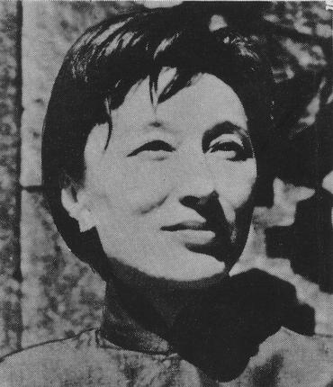
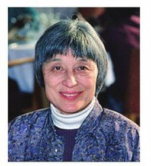

Thực ra là Hai mùa hè vắng bóng chim, một mùa hè của tác giả lồng trong mùa hè của sáu trăm triệu dân Trung Hoa, cả hai đều “dài đăng đẳng” hơn mười năm trời đều “nóng bỏng đến nỗi chim chóc không hót nữa”, nhưng sau lò lửa đó, “người ta đã cảm thấy ngọn gió biển đầu tiên đem lại trận mưa tế độ”.
Nguyên do chỉ tại Nhật Bản đã muốn thôn tính Trung Hoa từ lâu, ngày mùng 7 tháng 7 năm 1937 viện cớ một người lính Nhật mất tích (sau lại trở về) mà tấn công đồn Uyên Bình của Trung Hoa ở gần Lư Câu Kiều và gây ra cuộc chiến tranh Trung Nhật 1937-1945. Hay tin quân Nhật ồ ạt chiếm đánh Hoa Bắc, Han Suyin (Hàn Tú Anh), 21 tuổi, đương học năm thứ ba Y Khoa ở Đại Học Bruxelles nổi con khủng hoảng tinh thần: bực tức, dễ quạu, mất ngủ, khóc lóc – con người đó cực kỳ đa cảm – nhất định bỏ học, trở về Trung Hoa để cứu nước, mặc dầu họ hàng bên ngoại và bạn bè đều cho như vậy là điên khùng. Nhưng Han Suyin một mực đáp: “Cây thì có gốc rễ nên tôi trở về gốc rễ, ở lại đây, tôi sẽ nhớ nước mà chết mất”.

Bà chỉ có một nửa máu Trung Hoa, tên thực là Rosalie Tchou (Hàn Tú Anh chỉ là bút hiệu) mà yêu Trung Hoa hơn cả cha mẹ và bản thân bà nữa. Thân phụ là Tchou Yen Tong, sanh trong một vọng tộc ở Thành Đô (tỉnh Tứ Xuyên), qua Bỉ học từ 1904 đến 1913, trở về nước với một bằng cấp Kỹ sư hỏa xa và một người vợ Bỉ trong giai cấp đại tư sản, Marguerite Denis, rồi làm cho một công ty Hỏa xa của Bỉ, xây cất nhiều đường xe lửa ở Hoa Bắc. Cha vẫn giữ cốt cách Trung Hoa, điềm đạm, nghệ sĩ, thích làm thơ. Mẹ thì lãng mạn, nóng nảy, bướng bỉnh, nhưng rất can đảm.
Han Suyin sanh năm 1917 ở Bắc Kinh, hồi nhỏ rất cực khổ. Nhà nghèo vì cha không muốn hưởng gia tài của tổ tiên, mà lương một kỹ sư “da vàng” chỉ bằng một phần năm lương một kỹ sư “da trắng”. Lại bị mẹ ghét bỏ vì không đẹp mà tính tình cứng cỏi. Mười lăm tuổi phải thôi học, khai gian tuổi, xin một chân thư ký để giúp nhà và có tiền học thêm. Nhờ tư chất rất thông minh, thi đậu vô đại học Yen tching ở Bắc Kinh, và hai năm sau, năm 1935, được một người Bỉ, Joseph Hers, bạn của cha – vì vậy trong truyện này, Han Suyin gọi là Bác – xin cho một học bổng qua Bruxelles học Y Khoa. Ở Bruxelles, bà học cũng rất tấn tới, luôn luôn đỗ đầu, thường diễn thuyết, hô hào lòng ái quốc trong hội Ái hữu Trung Bỉ, yêu một luật sư Bỉ trẻ tuổi, tên là Louis hai người định cưới nhau thì chiến tranh Trung Nhật phát, và bà quyết tâm từ bỏ hết: thầy học, bạn bè, họ hàng bên ngoại, vị hôn phu và cả tương lai nữa để về Trung Hoa kháng Nhật.
Truyện bắt đầu từ lúc bà xuống tàu Jean Laborde nhổ neo ở Marseille để đi Hương Cảng. Bà gặp một bạn cũ ở Bắc Kinh hồi nhỏ, Tang Pao-Houang, sinh viên trường võ bị Sandhurst (Anh) cùng về một chuyến tàu, cũng để kháng Nhật. Hai người cùng chung một hoài bão, một lý tưởng:
“Cô về Trung Hoa?… một thiếu nữ mà ái quốc thì càng đáng khen hơn nữa… Tôi sẽ về thẳng Vũ Hán để trình diện với thượng cấp… Tôi sẵn sàng chết vì Tổ quốc… còn cái vinh dự nào bằng chết vì chiến đấu với quân xâm lăng?”.
Những lời đó “tung bay trong ngọn gió từ mặt biển sặc sỡ đưa lên”, làm cho Han Suyin tưng bừng, tưởng tượng cuộc đời sắp tới, gian khổ nhưng anh dũng, đây đủ ý nghĩa và tràn trề hy vọng.
Họ yêu nhau, ghé Hương Cảng ít bữa rồi nôn nả đi thẳng về Vũ Hán, chỉ sợ trễ quá, không kịp dự trận kháng Nhật đương xảy ra tại đó. Họ cưới nhau ở Vũ Hán, dự định chồng sẽ cầm quân, vợ sẽ làm y tá trong quân y viện.
Nhưng toàn là ảo tưởng cả. “Mùa hè” nóng bỏng của Han Suyin bắt đầu từ đó: Tang Pao-Houang, tưởng là một thanh niên nhiệt tâm ái quốc thì chỉ là hạng phong kiến, hám danh hám lợi, mặc dầu có tân học mà tinh thần rất hủ bại, đối với vợ tàn nhẫn không tưởng tượng nổi, cứ ít bữa lại đánh đập vợ, cả những khi ở giữa công viên, ở trong tiệm ăn, Han Suyin “vì muốn hi sinh cho Trung Hoa” mà phải cắn răng chịu đựng. Trong những giờ bị hành hạ đó:
“… tôi tập vừa hít thật sâu, vừa đếm: “Trung Hoa có sáu trăm triệu dân: 1, 2, 3, 4, 5… Anh ấy sắp chán… Anh ấy sắp chán… anh ấy sắp nghỉ tay”. Dù cảnh đó kéo dài… có khi tới gần 10 giờ, tôi không được ăn uống gì cả, mà cũng vẫn phải ngồi co ro trên sàn, đợi những cú giáng xuống, sợ nhất là bị đòn mà hóa đui hoặc mặt mày thành sẹo…”.
Mà hầu hết các bạn của Pao, các sĩ quan Hoàng Phố đều như vậy, có kẻ còn nhốt vợ vào cũi, bêu ở ngoài đường cho tới chết đói mà không ai dám can ngăn kể cả cha mẹ người đàn bà xấu số! Thực tế đã vượt hẳn sức tưởng tượng. Han Suyin xin ly dị, Pao nhất định không cho, xin đi học thêm cũng mấy lần bị từ chối. Pao chỉ muốn vợ mình làm nô lệ trong nhà để thoả mãn nhục dục và những cơn điên của mình thôi, hoặc để giúp mình tiến thân. Và Han Suyin chịu cuộc đời nô lệ đó tám năm, theo Pao từ Vũ Hán đến Quảng Tây, vô Trùng Khánh, sau cùng qua Londres khi Pao được phái làm tùy viên quân sự ở Anh.
Năm 1945, Bà oán Pao tới nỗi đâm ra ghê tởm lây hết thảy bọn đàn ông, sau đó trong bốn năm, bà bị bệnh thần kinh, tưởng hóa điên. Sau bà quyết ly thân, để Pao về Trung Hoa một mình [1], bà ở lại Londres học tiếp y khoa, để có nghề tự nuôi thân và nuôi một đứa con gái nuôi năm tuổi.

Vậy hoài bão là trở về Trung Hoa để giúp quê hương trong cuộc chiến tranh chống ngoại xâm, mà thực tế chỉ là để sống một cuộc đời vô ích và tủi nhục. Nhưng không bao giờ bà tiếc mấy năm đó cả, vì nhờ theo Pao, bà mới thấy được tận mắt chế độ thối nát kinh khủng của Tưởng Giới Thạch (Pao là một sĩ quan cấp tá được Tưởng hơi tin cậy), thấy được tình cảnh điêu đứng của bần dân Trung Hoa sống như loài vật trên một non sông tuyệt đẹp. Tóm lại là được mục kích, được sống “một mùa hè nóng bỏng” của dân tộc, khiến bà càng yêu quê hương và đồng bào của bà hơn.
Phần tả đời sống của phu phen, nông dân Trung Hoa, dưới sự đàn áp, bóc lột của bè phái Tưởng Giới Thạch, xen lẫn với phần tả đời sống riêng tư của bà một cách điêu hòa, khéo léo, không phần nào lấn phần nào, mà giọng văn luôn luôn linh động, có chỗ mỉa mai, dí dỏm, nhiều chỗ phẫn uất, hình ảnh mới mẽ, bút pháp rất mạnh.
Chính nhờ đọc cuốn này – chứ không phải những cuốn sử hiện đại của Trung Hoa – tôi mới hiểu tại sao năm 1945 danh của Tưởng Giới Thạch lên tới tột đỉnh, mà chỉ bốn năm sau ông ta đã phải dắt vợ con và một bọn thủ hạ chạy trốn qua Đài Loan, không quên ôm theo 450 triệu Mỹ Kim, vàng, và Mỹ bỏ non sáu tỉ [2]vào cuộc nội chiến Trung Hoa mà không cứu vãn nổi, lại chuốc thêm một nỗi hận chua chát.
Nguyên nhân thất bại nằm ngay trong lòng Quốc Dân đảng từ trước 1938. Đủ hết các cảnh độc tài và thối nát trong một tấn tuồng vừa bi vừa hài: chính quyền Quốc Dân đảng chỉ lo củng cố địa vị và làm giàu, không nghĩ tới dân, không kháng Nhật, rút lui hoài về phía Tây, nhường hết những miền phì nhiêu cho Nhật, để sống trong những hầm bọc sắt tại Trùng Khánh bảo toàn lực lượng, chờ thế chiến chấm dứt mà “bất chiến tự nhiên thành”, rồi lúc đó sẽ xua quân diệt Cộng, họ đề cao nhân vị mà lại lùng bắt nông dân ở ngoài đồng, phu phen ở ngoài phố, lấy dây thừng hay dây chì cột lại thành từng “xâu” lùa vào các trại quân, rồi đánh đập, bỏ đói, họ mua quan bán chức, bán chợ đen dược phẩm, y phục, lương thực của lính, bán lậu khí giới cho Nhật, đi công du ngoại quốc thì kẻ nào cũng chở từng xe cam nhông xa xỉ phẩm về, họ bắt dân nhổ lúa để trồng thuốc phiện, họ đặt ra hàng trăm thứ thuế: thuế tóc, thuế cửa sổ, thuế số nhà, thuế thương người, thuế hạnh phúc, thuế làm biếng (nghĩa là không trồng thuốc phiện…) [3], họ lạm phát giấy bạc tới cái mức dân phải khiêng cả thúng giấy bạc đi mua một vé xe buýt [4], gái điếm nhung nhúc, mật vụ cũng nhung nhúc. Đức có bọn Sơ mi nâu thì họ có bọn Sơ mi lam, hạng công chức hay quân nhân cao cấp Quốc Dân đảng thì bốn năm vợ, ngày nào cũng đánh mạt chược từ khi mở mắt cho tới khi đi ngủ, một kẻ kiêm bảy tám chức vụ, lãnh bảy đầu lương, và lâu lâu mới tới nhiệm sở một hai giờ, còn hạng công chức thấp thì rách rưới, đói khát, chỉ được cấp gạo vừa đủ cho vợ con khỏi chết đói, cho nên công việc bê trễ, và nạn hối lộ lan tràn từ trên xuống dưới, thành một “quốc sách” bắt dân phải gián tiếp trả thêm lương cho công chức.
Còn hạng dân đen thì:
“… ngay dưới chân tôi, dưới 478 bục đá [5]kia là bờ sông chất lộn xộn những thúng, những bành hàng hóa mà phu phen tranh nhau đưa lên vai để khiêng rồi leo, leo, leo những bực thang, thành một hàng bất tuyệt, leo hoài không ngừng, và người ta thấy cổ họ, chân họ nổi gân lên, nghe thấy hơi thở hổn hển của họ phát từ những bộ ngực lép xẹp, thót lại… Tôi thấy những phu khiêng kiệu chiến đấu từng bực, từng bực một, cái cán bằng tre đâm sâu trong thịt họ mỗi khi kiệu lắc lư, trong kiệu, các công chức ưỡn người ra khoan khoái…”.
Ngày ngày Han Suyin nhìn thấy tình cảnh những người lao động đó quần rách để hở đít, đầy rận, kẻ nào cũng xanh xao, ốm tong teo vì nghiện thuốc xái – họ không đủ ăn, phải dùng thứ đó để lấy sức mà khiêng vác, cứ hai giờ lại nghỉ để hút – bà thương họ vô hạn, và:
“Thật là vô lý, không hiểu tại sao tôi lại muốn ở vào địa vị họ, tôi muốn đôi dép rơm mà họ đi, uống thứ trà đậm, chát mà họ uống ở các quán cóc… rồi tôi cũng leo những bực thang như họ, nhưng hỡi ôi, không vác gì trên vai cả!”.
Bà uất hận, tin chắc rằng tình trạng đó không thể kéo dài hoài được, một ngày kia cách mạng phải vì bọn họ mà dấy lên, như một cơn nước dông, cuốn hết các nhơ nhớp của chính thể Quốc Dân đảng, và năm 1945, khi Nhật đầu hàng Đồng minh, bà mừng rỡ đoán trước rằng cuộc cách mạng sắp phát.
Đọc phần đó, chúng ta không thể không liên tưởng đến tình cảnh nước ta trong mười mấy năm qua, tôi cho rằng có những luật bất di bất dịch trong lịch sử: những dân tộc cùng một văn hoá, đặt trong một hoàn cảnh như nhau thì phản ứng cũng như nhau và rốt cuộc cùng đi tới một điểm lịch sử như nhau. Điều đó tôi đã dẫn chứng trong bộ Văn học Trung Quốc hiện đại [5], đọc tác phẩm của Han Suyin, tôi càng thấy nó đúng. Thật lạ lùng! Việt Nam và Trung Hoa sát nách nhau, sự thất bại của Tưởng Giới Thạch như tấm gương tầy liếp mà Ngô Đình Diệm và các người sau không biết soi, ngay như Mỹ cũng vậy, đã thất bại ở Trung Hoa mà càng không biết rút ra một bài học, lại sa vào vết xe cũ. Cơ hồ như con người không biết dùng lí trí, hành động toàn theo một bản năng do hoàn cảnh, nếp sống quyết định. Ít ai học được bài học của lịch sử!
Bà kịch liệt mạt sát chế độ Quốc Dân đảng làm cho ta có cảm tưởng rằng bà thiên Cộng. Sự thật không phải vậy: bà chỉ ghét những kẻ tàn bạo và chỉ yêu dân tộc Trung Hoa thôi, hễ phải thì bà khen, trái thì bà chê, cho nên Quốc Dân đảng đã ghét bà mà Cộng Sản cũng không ưa: Năm 1948 đã “tố” bà rồi, năm 1966-1967, một nhóm ở Bắc Kinh lại tố thêm một lần nữa trong cuộc cách mạng Văn hóa.
Trả lời cuộc phỏng vấn của Marianne Monestier [6] (năm 1967 hay 1968), bà nói:
“…Tôi chưa bao giờ là cộng sản, mà cũng không bao giờ có thể thành cộng sản được vì đã tới cái tuổi không còn tin một cách khá mãnh liệt bất kỳ một cái gì nữa”. Mục đích của bà là ghi lại các biến cố “một cách vô tư và trung thực, không khôi phục dĩ vãng, cũng không chiến đấu cho hiện tại, để cho các thế hệ sau biết hết những gì đã xảy ra” vì “thế giới cần có những nghệ sĩ chép lại các biến cố một cách thiện cảm mà không cuồng nhiệt, hơn là cần các nhà truyền giáo độc ác hô hào những cuộc chiến đấu hư ảo chống lại sự thật”.
Bà khởi công từ năm 1964. Trước năm đó bà đã xuất bản được sáu bảy cuốn, cuốn đầu là Destination Tchoungking viết từ hồi sống ở Trùng Khánh, chung với một nữ bác sĩ Mỹ (bà viết rồi bạn bà sửa lại) kể cuộc đời của vợ chồng bà từ Vũ Hán theo Tưởng Giới Thạch lại Trùng Khánh. Cuốn đó xuất bản ở Mỹ, rồi ở Anh. Sau đó bà ngưng viết khoảng mười năm. Năm 1949 đậu Y Khoa bác sĩ rồi (chồng bà đã tử trận ở Mãn Châu) nhiều nơi ở Londres nhờ bà cộng tác, bạn bè cũng khuyên bà ở lại Anh làm việc, nhưng lần này cũng như mười năm trước, bà quyết định trở về Á Châu, dù không sống ở Hoa lục thì ít nhất cũng sống ở sát Hoa lục để coi xem tình hình ra sao, dân chúng Trung Hoa dưới chế độ cộng sản sống ra sao? “Tôi không thể sống yên ổn ở Anh được… tôi không từ bỏ Trung Hoa, tôi không quay lưng lại với nó”.
Và bà đáp xuống Hương Cảng, mở phòng mạch trị bệnh cho người Á Châu, sau lại Singapore cũng để vừa làm nghề y sĩ, vừa xét tình cảm người Trung Hoa, người Mã Lai…
Trong thời gian từ năm 1950 đến 1964, bà viết thêm những cuốn:
Multiple Splendeur về Trung Hoa.
Et de la pluie pour ma soif về cuộc kháng Anh ở Mã Lai.
La montagne est jeune
v.v…
Cuốn nào cũng đã được dịch ra tiếng Pháp (nhà Stock ở Paris, và nhà Rencontre ở Lausanne), nhiều cuốn đã được in trong loại sách bỏ túi.
Những hình ảnh những cùng dân Trung Hoa vẫn ám ảnh bà, bà bất mãn về các cuốn đã viết về Trung Hoa, nhất là cuốn Destination Tchoungking viết hồi sống dưới chế độ kiểm duyệt gắt gao của Tưởng Giới Thạch, trái hẳn sự thực, cho nên năm 1964 bà ngưng hoạt động y sĩ, soạn một bộ kể lại đời sống của gia tộc bà và lịch sử Trung Hoa từ cuối thế kỷ trước cho tới những ngày gần đây nhất, để giải tỏa nỗi lòng. Điều đó làm cho chúng ta nhớ trường hợp Somerset Maugham bỏ viết kịch để viết truyện Of human bondage [7].
Bộ đó gồm bốn cuốn, tới nay đã xuất bản được ba:
- L’arbre blessé – 1965 (Cây bị thương tích) chép giai đoạn từ 1885-1928.
- Une fleure mortelle – 1967 (Một bông hoa tai hại) chép từ 1928-1938.
- Un été sans oiseaux – 1968 (Một mùa hè vắng bóng chim) chép từ 1938-1949.
Cả ba cuốn đó đã được dịch ra tiếng Pháp từ khi bản tiếng Anh mới xuất hiện và có thể còn được dịch ra nhiều thứ tiếng khác nữa.
Cuốn thứ tư, nhan đề là La moisson du Phénix (Mùa gặt của chim Phượng), chưa xuất bản, chép tiếp từ 1949 trở đi, và sẽ cho ta được nhiều tài liệu quí về các sự thay đổi triệt để ở Hoa lục, trong đời sống của mọi giai cấp, vì trong khoảng mười mấy năm nay, năm nào bà cũng về Hoa lục “thăm bà con bè bạn, tìm lại những sự kiện, kỉ niệm cũ…”, thu thập ghi chép những điều mắt thấy tai nghe.
Toàn bộ sẽ dầy khoảng 1.600 trang khổ lớn, xấp xỉ bộ Chiến tranh và hòa bình của Léon Tolstoi, có giá trị hơn các truyện Pearl Buck viết về Trung Hoa, Pearl Buck chỉ giúp người Phương Tây hiểu một cách hời hợt đời sống cùng tâm hồn người Trung Hoa, những điều mà chúng ta, cùng một văn hóa với Trung Hoa, đều biết cả rồi. Han Suyin sâu sắc hơn, cho ta thấy thận phận bi đát, tủi nhục của phụ nữ (chính là thân phận của bà) của bần dân Trung Hoa, và hiểu được lịch sử hiện đại của Trung Hoa, một bi kịch lớn nhất của thời đại, làm sụp đổ một nền văn minh bốn ngàn năm và đương làm rung chuyển cả thế giới, hậu quả chưa biết sẽ tới mức nào. Chính bi kịch chung của một dân tộc đó đã gây ra một bi kịch riêng cho gia đình họ Tchou trong hai thế hệ, thế hệ của thân phụ bà và của bà.
Trong ba cuốn đã ra, chúng tôi lựa cuốn sau cùng “Một mùa hè vắng bóng chim” để giới thiệu với độc giả vì cuốn đó tả một giai đoạn bi đát nhất, có ảnh hưởng lớn nhất tới tương lai của Đông Á, mà người Việt chúng ta lại được biết ít nhất.
Trong mười mấy năm nay, chúng tôi đã nhờ các bạn thân kiếm giùm ở Hương Cảng, ở Đài Bắc một cuốn sử của người Trung Hoa viết về giai đoạn đó, mà không được. Chúng tôi đành phải tìm các cuốn sách người Anh, người Pháp viết. Cũng được vài cuốn có giá trị (khảo cứu công phu, có tinh thần khách quan) như cuốn Les origines de la Révolution Chinoise (1915-1919) của Lucien Bianco (Gallimard 1967) nhưng những cuốn này là sử, tài liệu tuy dồi dào mà không gợi được cái không khí của thời cách mạng, cùng cái nỗi lòng của dân chúng. Tác phẩm của Han Suyin bổ túc được khuyết điểm đó, và chính Lucien Bianco cũng nhiệt liệt giới thiệu cuốn L’abre blessélà cuốn đáng đọc nhất về lịch sử Trung Hoa hiện đại trong loại sách phổ thông.[8]
Khi dịch, chúng tôi đã cắt bớt chín trang đầu tác giả tự giới thiệu, vì những ý chính trong đoạn đó đã được đưa vào Tựa này rồi, nhiều đoạn khác chép những kỷ niệm riêng của tác giả về một số người thân hoặc bạn bè (có giá trị về tình cảm đối với tác giả mà ít quan trọng đối với chúng ta). Tôi cũng cắt bớt hoặc tóm tắt lại cho khỏi mất sự liên tục trong truyện.
Han Suyin mượn nhiều danh từ khoa học, nhất là y khoa để tạo những hình ảnh đột ngột, dùng một bút pháp tự nhiên, có nhiều góc cạnh không đẽo gọt như Pearl Buck, chính vì vậy mà lời văn rất mạnh, nhưng cũng khó dịch, đôi khi chúng tôi phải phóng bút, cốt diễn lại được một phần cảm xúc của tác giả thôi.
Chúng tôi đã tra cứu trong hai bộ:
- Asia Who’s Who (in lần thứ ba) của cơ quan Pan Asia Newspaper Alliance – Hương Cảng.
- China Year Book 1967-1968 của nhà China Publishing Co – Đài Bắc để tìm ra các danh nhân, địa danh Trung Hoa phiên âm ra tiếng Pháp trong tác phẩm.
Dĩ nhiên có nhiều tên không thể tra được, như những nhân danh Tchou Yentong, Tang Pao Houang, thân phụ và chồng của Han Suyin, những địa danh Nanyu, Chin Kan shan… mặc dầu rất thường nhắc tới trong truyện mà không có hai cuốn kể trên, chúng tôi đành phải để nguyên lối phiên âm trong bản tiếng Pháp, chứ không dám làm cái việc đoán mò.
Những tên tra được thì tôi dùng ngay tên Việt như Bạch Sùng Hi, Hà Ứng Khâm, Diên An, Quế Lâm… rồi cuối sách mới lập một bảng chép thêm những tên đó bằng tiếng Anh: Pai-Tchong-hsi, Ho Ying K’in, Yenan, Koueilin…
Sài Gòn, ngày 01-08-1971 - Xem lại tháng 12-1980
N.H.L
Chú thích:
(1) Marianne Monestier trong một bài phỏng vấn Han Suyin, (chúng tôi dịch trong cuốn 15 gương phụ nữ - Trí Đăng - 1970) đã lầm chăng khi bảo rằng, năm 1945 bà trở về Trung Hoa với Pao, sau trở qua Londes học lấy nốt bằng cấp y sĩ.
(2) Ở Việt Nam, Mỹ đã tiêu tới nay 210 tỷ.
(3) Có những quân phiệt bắt dân đóng thế trước 50 năm.
(4) Có hồi họ “đúc” tiền bằng đất sét.
(5) Trùng Khánh cất trên núi, từ bờ sông Dương Tử lên thành phố phải leo 478 bực đục trong đá.
(6) NXB Nguyễn Hiến Lê, 1972, Sài Gòn, NXB Văn học tái bản, 1999
(7) Bản Việt dịch là Kiếp Người Lửa Thiêng XB, 1970, Sài Gòn Văn học tái bản, 1992
(8) Khi ông giới thiệu cuốn đó thì cuốn Un été sans oiseaux chưa xuất bản.